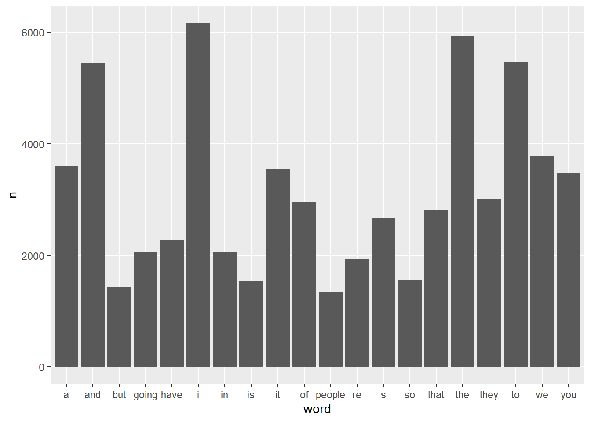
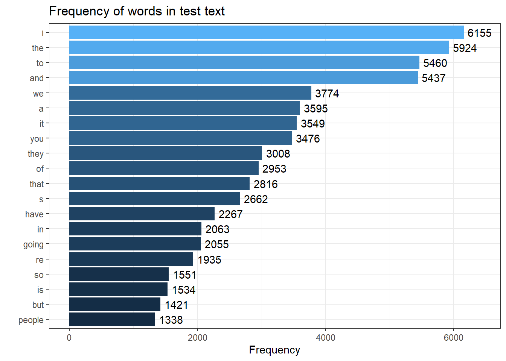

Working with text
We have now worked though how to load, save, and edit data. So now, we will see if R is also perfectly equipped for working with textual data.
In a first step, we will (re-)load the packages we need (just in case you have skipped this step before).
install.packages("tidyverse")
install.packages("tidytext")
install.packages("quanteda")
install.packages("tokenizers")
install.packages("here")
install.packages("flextable")
# install klippy for copy-to-clipboard button in code chunks
install.packages("remotes")
remotes::install_github("rlesur/klippy")To load these packages, use the library function which takes the package name as its main argument.
library(tidyverse)
library(tidytext)
library(quanteda)
library(tokenizers)
library(here)
library(flextable)
# activate klippy for copy-to-clipboard button
klippy::klippy()Now, after installing the required packages, we will start working with text data.
Loading and saving text(s)
Loading and saving a single text
To load text data from the web, we can use the read_file function which takes the URL of the text as its first argument. In this case will will load the 2016 rally speeches Donald Trump.
# Read the lines of text from the "english.txt" file
# The `readLines` function reads each line from the specified file as a character vector
# The `here` function is used to construct a file path to the "english.txt" file in the "data" directory
text1 <- base::readLines(here::here("data", "english.txt")) %>%
# Collapse the character vector into a single string with no spaces between lines
paste0(collapse = "")
# Inspect the structure of the resulting text data to confirm it has been collapsed into a single string
str(text1)## chr "Linguistics is the scientific study of language and it involves the analysis of language form, language meaning"| __truncated__To save text data, we can use the writeLines function as shown below.
# Write the contents of the `text1` variable to a new text file
# The `writeLines` function saves the character data in `text1` to a file
# The `here` function is used to specify the file path within the "data" directory, naming the file "english_new.txt"
writeLines(text1, here::here("data", "english_new.txt"))Loading and saving many texts
When dealing with text data, it is quite common to encounter scenarios where we need to load multiple files containing texts. In such cases, we typically begin by storing the file locations in an object (referred to as fls in this context) and then proceed to load the files using the sapply function, which allows for looping. Within the sapply function, we have the option to utilize either scan or writeLines for reading the text. In the example below, we employ scan and subsequently merge the individual elements into a single text using the paste function. The output demonstrates the successful loading of 7 txt files from the testcorpus located within the data folder.
# Extract file paths for all text files in the "testcorpus" directory
# `list.files` lists all files in the specified directory (constructed using `here::here`)
# The `pattern = "txt"` argument filters for files with a ".txt" extension
# `full.names = T` returns the full path for each file, making it easier to load them later
fls <- list.files(here::here("data", "testcorpus"), pattern = "txt", full.names = TRUE)
# Load the text from each file path into a character vector
# `sapply` applies a function to each element of `fls`, here loading each file's content
# `scan` reads the file contents as individual words (specified by `what = "char"`)
# `paste0` then collapses each file's content into a single string separated by spaces
txts <- sapply(fls, function(x){
x <- scan(x, what = "char") %>%
paste0(collapse = " ")
})
# Inspect the structure of `txts` to verify it contains the loaded text from each file
# `str` provides an overview of the structure and content in `txts`
str(txts)## Named chr [1:7] "Linguistics is the scientific study of language. It involves analysing language form language meaning and langu"| __truncated__ ...
## - attr(*, "names")= chr [1:7] "C:/Users/uqmschw5/OneDrive - The University of Queensland/Desktop/LDaCA/ResBaz2024ta/data/testcorpus/linguistics01.txt" "C:/Users/uqmschw5/OneDrive - The University of Queensland/Desktop/LDaCA/ResBaz2024ta/data/testcorpus/linguistics02.txt" "C:/Users/uqmschw5/OneDrive - The University of Queensland/Desktop/LDaCA/ResBaz2024ta/data/testcorpus/linguistics03.txt" "C:/Users/uqmschw5/OneDrive - The University of Queensland/Desktop/LDaCA/ResBaz2024ta/data/testcorpus/linguistics04.txt" ...To save multiple txt files, we follow a similar procedure and first determine the paths that define where R will store the files and then loop over the files and store them in the testcorpus folder.
# Define the output file paths for each file in the sequence
# The `file.path` function constructs the paths dynamically by pasting together:
# - the base directory using `here::here()`
# - the "data/testcorpus_new" subdirectory
# - the "text" prefix and sequence numbers (1 through 7) for each file
# - the ".txt" extension to indicate text files
outs <- file.path(paste(here::here(), "/", "data/testcorpus_new", "/", "text", 1:7, ".txt", sep = ""))
# Save each text element from `txts` into the corresponding file path defined in `outs`
# `lapply` iterates over each element of `txts` using `seq_along` to get the index `i`
# `writeLines` writes the content of `txts[[i]]` (each element in `txts`) to `outs[i]`, the corresponding file path
lapply(seq_along(txts), function(i)
writeLines(txts[[i]],
con = outs[i]))## [[1]]
## NULL
##
## [[2]]
## NULL
##
## [[3]]
## NULL
##
## [[4]]
## NULL
##
## [[5]]
## NULL
##
## [[6]]
## NULL
##
## [[7]]
## NULLBasics of regular expressions
Before we delve into data cleaning, we will have a look at the regular expressions that can be used in R and also check what they stand for.
There are three basic types of regular expressions:
regular expressions that stand for individual symbols and determine frequencies
regular expressions that stand for classes of symbols
regular expressions that stand for structural properties
The regular expressions below show the first type of regular expressions, i.e. regular expressions that stand for individual symbols and determine frequencies.
RegEx Symbol/Sequence | Explanation | Example |
|---|---|---|
? | The preceding item is optional and will be matched at most once | walk[a-z]? = walk, walks |
* | The preceding item will be matched zero or more times | walk[a-z]* = walk, walks, walked, walking |
+ | The preceding item will be matched one or more times | walk[a-z]+ = walks, walked, walking |
{n} | The preceding item is matched exactly n times | walk[a-z]{2} = walked |
{n,} | The preceding item is matched n or more times | walk[a-z]{2,} = walked, walking |
{n,m} | The preceding item is matched at least n times, but not more than m times | walk[a-z]{2,3} = walked, walking |
The regular expressions below show the second type of regular expressions, i.e. regular expressions that stand for classes of symbols.
RegEx Symbol/Sequence | Explanation |
|---|---|
[ab] | lower case a and b |
[a-z] | all lower case characters from a to z |
[AB] | upper case a and b |
[A-Z] | all upper case characters from A to Z |
[12] | digits 1 and 2 |
[0-9] | digits: 0 1 2 3 4 5 6 7 8 9 |
[:digit:] | digits: 0 1 2 3 4 5 6 7 8 9 |
[:lower:] | lower case characters: a–z |
[:upper:] | upper case characters: A–Z |
[:alpha:] | alphabetic characters: a–z and A–Z |
[:alnum:] | digits and alphabetic characters |
[:punct:] | punctuation characters: . , ; etc. |
[:graph:] | graphical characters: [:alnum:] and [:punct:] |
[:blank:] | blank characters: Space and tab |
[:space:] | space characters: Space, tab, newline, and other space characters |
The regular expressions that denote classes of symbols are enclosed in [] and :. The last type of regular expressions, i.e. regular expressions that stand for structural properties are shown below.
RegEx Symbol/Sequence | Explanation |
|---|---|
\\w | Word characters: [[:alnum:]_] |
\\W | No word characters: [^[:alnum:]_] |
\\s | Space characters: [[:blank:]] |
\\S | No space characters: [^[:blank:]] |
\\d | Digits: [[:digit:]] |
\\D | No digits: [^[:digit:]] |
\\b | Word edge |
\\B | No word edge |
< | Word beginning |
> | Word end |
^ | Beginning of a string |
$ | End of a string |
Now that we have a basic understanding of regular expressions, we can continue with cleaning our data.
Cleaning text data
To see how we can clean data, we will load some data representing speech of Donald Trump.
# Load the text from the "Trump.txt" file line by line
# `readLines` reads each line of text from the file as a character vector
# The `here` function helps specify the file path in the "data" directory
Trump <- base::readLines(here::here("data", "Trump.txt")) %>%
# Collapse the character vector into a single continuous string
# `paste0(collapse = "")` removes any line breaks between lines
paste0(collapse = "")
# Replace newline characters with a space
Trump %>%
# remove numbers
stringr::str_remove_all("\\d") %>%
# Replace all non-alphanumeric characters with a space
# Replace all non-alphanumeric characters with a space
stringr::str_replace_all("[^[:alnum:] ']", " ") %>%
stringr::str_replace_all("n t ", "nt ") %>%
# Remove all double quote characters
stringr::str_remove_all("\"") %>%
# Remove extra whitespace and collapse multiple spaces into a single space
stringr::str_squish() %>%
# convert to lower case
tolower() -> Trump_clean
# Check the character count of each element in the cleaned data
str(Trump_clean)## chr "speech thank you so much that's so nice isn't he a great guy he doesn't get a fair press he doesn't get it it's"| __truncated__Tabulating text data
It is very easy to extract frequency information and to create frequency lists. We can do this by first using the unnest_tokens function which splits texts into individual words, an then use the count function to get the raw frequencies of all word types in a text.
# Convert the `Trump_clean` text data into a tibble format
# The `tibble` function creates a tibble with a single column named `text` containing the entire Trump text
Trump_clean %>%
tibble::tibble(text = .) %>%
# Use `unnest_tokens` to split the text into individual words
# Specify `ngrams` as the token type with `n=1` to break the text down into single words (unigrams)
# Each word will appear in a new row within the `word` column
tidytext::unnest_tokens(word, text, token = "ngrams", n = 1) %>%
# Count the occurrences of each unique word and sort the counts in descending order
# The resulting data frame will have two columns: `word` and `n` (the count of each word)
dplyr::count(word, sort = TRUE) %>%
# Display the top 10 most frequent words
head(10)## # A tibble: 10 × 2
## word n
## <chr> <int>
## 1 i 6155
## 2 the 5924
## 3 to 5460
## 4 and 5437
## 5 we 3774
## 6 a 3595
## 7 it 3549
## 8 you 3476
## 9 they 3008
## 10 of 2953Visualising frequency lists
The next chunk of code processes a text variable (Trump) to count how often each word appears. It first converts the text into a tibble (a modern version of a data frame), then splits the text into individual words (using n-grams with n=1 for single words). It counts the occurrences of each word and sorts the results in descending order, retaining only the top 10 most frequent words in the freq_tb variable.
# Convert the text into a tibble (a type of data frame) with one column named 'text'
Trump_clean %>%
tibble::tibble(text = .) %>%
# Break the text into individual words (using ngrams with n=1 means single words)
tidytext::unnest_tokens(word, text, token = "ngrams", n = 1) %>%
# Count the occurrences of each word and sort them in descending order
dplyr::count(word, sort = TRUE) %>%
# Keep only the top 10 most frequent words
head(20) -> freq_tb # Store the result in freq_tbThe next chunk creates a simple bar chart using the ggplot2 package to visualize the word frequencies stored in freq_tb. The x-axis represents the words, while the y-axis represents the counts (frequency) of each word. The geom_bar() function is used with stat = "identity" to display the actual counts as bar heights.
# Create a bar chart to visualize the frequency of the top words
ggplot(freq_tb, aes(x = word, y = n)) +
# Use bars to represent the counts of each word
geom_bar(stat = "identity")
This chunk creates a more visually appealing horizontal bar chart of the word frequencies. The ggplot() function is used to set up the plot, with reorder() ensuring that the words are arranged according to their frequencies. Bars represent the counts, and text labels displaying the frequency are positioned slightly above each bar. The coord_flip() function flips the axes to make the bars horizontal. Additional formatting, such as titles, axis labels, and a clean theme, is applied to enhance the chart’s readability, and the legend is removed for clarity.
# Create a more detailed horizontal bar chart with word frequencies
ggplot(freq_tb, aes(x = reorder(word, n), y = n, label = n, fill = n)) +
# Use bars to represent the counts of each word
geom_bar(stat = "identity") +
# Add text labels to the bars showing their counts, offset slightly above the bars
geom_text(aes(y = n + 250)) +
# Flip the coordinates to make the bars horizontal
coord_flip() +
# Add titles and labels to the chart
labs(title = "Frequency of words in test text",
x = "",
y = "Frequency") +
# Use a clean theme for the chart
theme_bw() +
# Remove the legend from the chart
theme(legend.position = "none")
Concordancing and KWICs
Creating concordances or key-word-in-context displays is one of the most common practices when dealing with text data. Fortunately, there exist ready-made functions that make this a very easy task in R. We will use the kwic function from the quanteda package to create kwics here.
# Perform a keyword-in-context (KWIC) search on the tokenized `Trump_clean` text data
# `quanteda::kwic` is used to find occurrences of a specified phrase with a context window
# The `tokens` function tokenizes `Trump_split_clean` before applying the KWIC search
# `pattern = phrase("great again")` specifies the exact phrase to search for in the text
# `window = 3` sets the number of words shown on each side of the phrase for context
# `valuetype = "regex"` allows the pattern to be treated as a regular expression
kwic_multiple <- quanteda::kwic(tokens(Trump_clean),
pattern = phrase("great again"),
window = 3,
valuetype = "regex") %>%
as.data.frame()
# Inspect the first few rows of the KWIC results to verify the output
head(kwic_multiple)## docname from to pre keyword post pattern
## 1 text1 2609 2610 make our country great again we have to great again
## 2 text1 3827 3828 to make america great again we can make great again
## 3 text1 3834 3835 make this country great again the potential is great again
## 4 text1 8572 8573 will make america great again and if we great again
## 5 text1 9674 9675 to make america great again folks i m great again
## 6 text1 9688 9689 to make america great again and another great great againWe can now also select concordances based on specific features. For example, we only want those instances of “great again” if the preceding word was “america”.
kwic_multiple_select <- kwic_multiple %>%
# last element before search term is "america"
dplyr::filter(str_detect(pre, "america$"))
# inspect data
head(kwic_multiple_select)## docname from to pre keyword post
## 1 text1 3827 3828 to make america great again we can make
## 2 text1 8572 8573 will make america great again and if we
## 3 text1 9674 9675 to make america great again folks i m
## 4 text1 9688 9689 to make america great again and another great
## 5 text1 10294 10295 remember make america great again we re going
## 6 text1 12108 12109 never make america great again they dont even
## pattern
## 1 great again
## 2 great again
## 3 great again
## 4 great again
## 5 great again
## 6 great againAgain, we can use the write.table function to save our kwics to disc.
As most of the data that we use is on out computers (rather than being somewhere on the web), we now load files with text from your computer.
Going further
If you want to learn more about using R for text analytics and what methods you could apply to your data, Please check out the Language Technology and Data Analysis Laboratory (LADAL) - especially the LADAL Tutorials on Text analytics and the LADAL Tools.